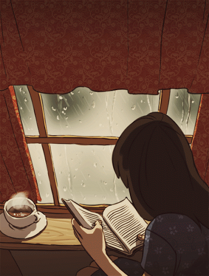
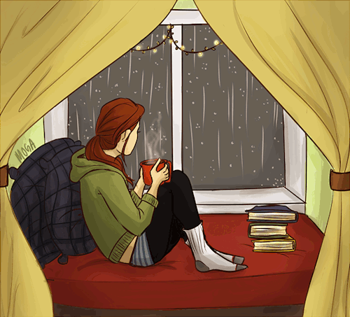

-
咀嚼黑夜星空，纵使清高贫苦，痛总会给你惊喜！
我们不肯探索自己本身的价值，我们过分看重他人在自己生命里的参与。于是，孤独不再美好，失去了他人，我们惶惑不安 ——《简单》《孤觞之恋》等
缘来则安之，情别亦惜君；如果你不习惯或看重他人在自己生命里的参与，那就赶紧牵起别人的手去追寻你所信仰的社交人脉达人这类标签省的更痛，也离你远远的生怕打扰。成长成熟最快的方式是一个人经历爱恨情痛，自己去咀嚼黑夜星空，纵使清高贫苦，环境也绝不会把你逼死，总会有意外的贵人与怪事出现，柳暗花明又岂非官方特供，痛总会给你思考之后的惊喜，在你绝大多数直觉下相信你自己比什么都重要！
朋友总是要会离开，即使关系再好，一个人的时候总是生命中最漫长的一部分，他人的陪伴包括同枕共眠的妻子也是短暂的，也总会想起一些人和一些事，不自觉的伤感或者噗嗤一笑，这就是味道，这就是生的意义。
缘来则安之，情别亦惜君！ 
我们很多人本身就是残疾的，不幸有些人是肉体的，有些人则是心灵和精神上的严重缺陷；身残还有志坚的机会，心残则很难有重建光明的机会；很多时候丰功伟绩属于喜欢黑夜的一类人群中，他们懂得审判自己与思古反今，高屋建瓴，制定严格的计划并强有力的执行从而一步步失败转战成功!很多时候我们就是被一丁点的事情蒙住了双眼却仍然津津有味的奋斗着，走在路灯下，我时常思考并遐想这样的问题：当很多事件发生在我的面前时，即使一片树叶你拿着它放在你的眼前，你照样看不见阳光，纵使无限美好，而在整个问题的处理过程中你丝毫不会注意这片不起眼的树叶，因为它太渺小了，对于今天我们每一个付出领域的专家来说，我们的身上不缺乏励志故事，而是在选择自己人生道路上就已经因为细节让自己的双眼蒙上了错误的纱，都说经历过即使痛苦失败也是人生最宝贵的财富，但是在当代社会还是最好聪明的把握好自己的每一次选择，即使你有机会实现弯道超越，但是我还是希望你可以少走弯路，有些痛可以聪明的避免，痛总有一天会给你惊喜，让你流着泪且笑着说出来，那时，我们都懂，因为我们很相似，也因此相识而记住彼此。星空，你好，好久不见，我还在静静地记录着青春的改变，岁月就是用来奋斗才会有她的意义！不要说苦和累，因为我们没有根本就没有彩排和重新选择的机会，多折腾多去寻找才会真正懂自己懂的生存处事处人之道！生活和人生无需和周围领域含着金钥匙出生的"贵族"或不同价值观的人有太多交集，如果你感觉生活中的任何人和事让你感到疲惫的话，不妨出去走走，多折腾几个领域换换感觉然后回溯稳定！
-
如果说人与人之间的相遇靠的是缘分，那么人和人的相处，靠的则就是一份真诚和信誉！
现实生活中，几乎每个人都会遇到借钱的情况。但很多人抹不开口，不愿意欠别人的。像李嘉诚这样的巨富是如何看待借钱这个问题的呢？李嘉诚说：什么最难？借钱!肯借钱给你的人，一定是你的贵人；不仅肯借，而且连个借条都不让你打的人，一定是你贵人中的贵人。如今，这样的贵人不多，遇到了，必须珍惜一辈子。在你困难时借钱给你的人，不是因为人家钱多，而是因为在你遇到困难时想拉你一把。借给你的也不是钱，而是信心，是信任，是激励，是对你能力的认可，是给你的未来投资。希望朋友们千万不要践踏“诚信”二字，失信乃是人生中最大的破产！望珍重！！！忠实的朋友是一辈子的财富！！！同时，请你记住：喜欢主动买单的人，不是因为人傻钱多，而是把友情看的比金钱重要。工作时愿意主动多干的人，不是因为傻，而是懂得责任。吵架后先道歉的人，不是因为错，而是懂得珍惜。愿意帮你的人，不是欠你什么，而是把你当真朋友，别人帮你是情分，不帮你是本分，没什么理所当然。有多少人忽视了这简单的道理，又有多少人觉得理所当然；更有些人自作聪明，甚至耍无赖嘴脸；这种人，早晚淡出人们的视线！真诚的人，走着走着就走进了心里；虚伪的人，走着走着就淡出了视线；如果说人与人之间的相遇靠的是缘分，那么人和人的相处，靠的则就是一份真诚和信誉！
收藏这篇文章，不是他多么动人而是很真实的经历，在生活的角落里面和我们很近很相似，我们可能在经历面对也可能即将挑战，总之，朋友相识要敬爱一生，不会给你太多遗憾！
-
不再让你孤单，这是我给你最好的答案 。
曾经的许多所谓的好友慢慢由于各种原因疏于联系，伴着岁月肆无忌惮掠夺你的青春，社会“大染缸”开始让你的人变得更精，人脉更精，所牵挂的不至于成群结队；还是有很多人我们勉强的去打声招呼或给个微笑，但总有一部分人能够住进我们的心中，那是为知己知音提前预定好的座位，至于我，心太小，装不下太多，只能尝试放掉一些人，迎接新人；你来，相似共振，我依然会欢迎下榻 ！
对于爱情亲情，我们总是想在他们眼里证明自己的能力，奋斗的意义！ 不要小看任何一段经历的人和事，时间是她们最好的过滤器，净化我们的氧气与水，友情与爱情，除了傻乎乎的亲情我再也找不到世界其他角落永恒的关系。 
时间让我思考太多却难开口，独饮这冰泠的酸梅汤；岁月让我安静太多，慢慢朋友都说我变了，变得不善社交不善言谈了；我没有反馈任何，一笑而过；不说不代表不会说，不说爱不代表不想爱，不说在乎不代表不想你；不对的人与事我们永远都不会对他们感冒，也不可能走到一起，更别说一生一世的奢侈了！
我真的想对你说：不再让你孤单！黑夜怪我太过高淡，错过太多美好；发现感情就像养只小猫一样，时而撒娇可笑，时而难以捉摸她的情绪，所以我们总觉得人有时是最复杂的动物！你我背井离乡来到这陌生的城市，为了各自的梦想拼命工作和加班赚钱，沟通成本丝毫没有因为互联网的发达便捷而变得一触即达，时间和空间的距离是心理距离无法超越的隔阂；许多相似的故事都将这样上演着，她告诉过我：她最大的梦想就是能时常陪在我的身边 。这些我都看在眼里，渴望彼此的陪伴，由于生存的原因异地让你我都变得伪装的坚强，我是多么希望给你一个拥抱，初入职场，我真的很无能为力，如果你在我的身边就好了，如果我在你的城市就好了，一切都是那么现实，让时刻奔跑的我在无数个黑夜想着漆黑的窗户心吁长叹！
我们伪装的都太过坚强，没有陪伴的日子一切都显得苍白无力，我祈求时间可以停一停，让我收藏你的笑脸；不是可望不可即的情话和承诺，我们到底追求的是什么？生活的考验太多，最后你会发现唯一不让后悔发生的选择就是相守的陪伴，而绝非远方的甜蜜与祝福！我喜欢你穿天蓝色连衣裙的样子，独一无二；我喜欢你在我面前露背肩的条纹，懵懂的以为这就是我此生的真爱；特别是你吃雪糕时，狡黠的嘴角，我已然烂醉，像你酒窝里的狗 ! 樱花每开一次，我就醉死一次，心痛一次，你去了北海道，我却与世不说！
-
爱恨别情都是我的心甘情愿，从此，不会再有遗憾和审判！
晚上10:13分，又是同样熟悉的老道和晕黄的路灯，走在回去的路上，是否想起了初恋？想起了远在千里的父母和亲人？想想"茫茫"碌碌的毕业季，满怀激情冲动和怀念憧憬的准职场新人纷纷开始了爱的呐喊，情绪的宣泄，同学旧书旧东西的"大甩卖",我想他们卖掉的不仅仅是物质，更是一种框架的解脱，一种彻底的分解，一种身份的终结...很快吧，也许你会怀念，也许你会一笑而过，也许这些终究是你的影子或即将开启的旅途。
忽然间闻到梧桐花花香的味道，转头四处凝望她的存在，到底是哪儿飘过来的香气呢？我想可能是我的鼻子撞邪了吧，要不就是马路上女生在那成群结队喷香水吧！我一直想过要当一个玩弄文字的文艺IT技术员，不过可能刚入门，很多灵感还未朦胧我变醉的疯狂，就如你的酒窝没有酒，我却醉的像只狗；偶尔的自以为是与虚荣心的膨胀都让回过神的我痛即思首，我想莎士比亚这样的大文豪曾经也有过这种感觉，在生存与创作面前的短暂矛盾心的折磨，大学最后一节英语课老师给我们放了许多“关于你的梦想”的主题演讲和歌曲，我想我是很触动的，因为这样的感慨对于一路经历和追寻的小生我来说再深刻不过了，痛并煎熬着，乐并前进着，苦并徘徊着，我非常感谢许多大学老师的谆谆教导，多数是人生和经历方面经验的探讨才能使我集中心思去捕捉，对于上学时官方教科书方面我深感抱歉确实没有投入太多精力去研究；没有说一口流利的英语、没有考到很好的成绩排名，没有认识太多的女性知音...这些都是我曾经学生时代的遗憾，需要用半生的时间去弥补，去格式化，去沉淀，去痛去爱，去发现只属于你我的世界。曾经我以为社交达人是多么的光耀，多么的自在；曾经我以为客户经理可以到处出差品尝路上的美味和风景；曾经的许多我都用汗水和时间读懂了“现在的自己”，至今，我不会再为遗憾而有超过5分钟的不愉快，许多故事我都成为了见证者，也终将成为我笔下的缩影，即便很low，起码对自己是一个交代。理想是是什么?很多很多都“死”在了寻找梦想和追寻梦想的路上，就像放风筝时线的距离而我们总想试试要把它放的更长一些，也许这就是青春年华下现实与理想的距离，只有体会经历你才会真正看清当初懵懂的自己，至于晚否我想我也不知道答案。记住这短暂的瞬间，我和你相遇不是偶然，纯属意外！有些人对时间的流逝感到遗憾；有些人则深陷其中，永远也逃不出来。过去都是假的，回忆是一条没有归途的路。我在想，爱上一个人是否会亢奋？爱着一个对的人会沉溺？爱错一个人会痛，而爱过的那个人，最有理由去遗忘。有时候我想把你的影子，加点盐，腌起来,风干。老的时候，下酒。好多情感和事物存在着却没有多大用，我想如果都发挥的如此有意义，真的会让你我从喘不过气来。从此 ，我就这样，简单而不简单，不仅要能享受那些成功时刻让人激情澎湃的成名天下扬，也要能承受之前若干年漫长岁月里寂寞冷淡带来的寒窗无人问 . . .
-
备注声明
工作原因，文章板块均移步到微信公众平台的原创媒体，感兴趣者可以添加微信号：PhotoArtLife(或识别右侧二维码添加编辑WeChat)
二维码
微博私信
回到顶部